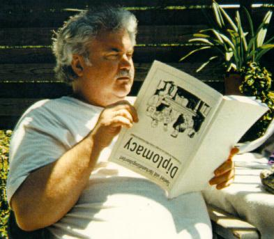

|  |
Yes, It Has Been
|
|---|
This summer has been full of surprises in both the world of Diplomacy and the world of diplomacy! And it isn't over yet.
By now everybody knows Hasbro has taken over the rights to Diplomacy. I really don't see what the big deal is all about, but then I remember when Avalon Hill took over the rights from GRI, and we all thought that was the greatest thing to happen since the invention of the TV dinner! The bottom line, I think, is that the game will survive as long as somebody can make money off of it; and the hobby will survive as long as players care.
It was interesting to see the way the various Diplomacy sub-hobbies responded to the word that Diplomacy had been taken over by Hasbro. Each of the sub-hobbies went its own way, doing its own thing; and all the "movers and doers" as well as the few remaining true "hobby old farts" did just what you would expect. Again the bottom line, life goes on.
I managed to raise the hair on a back of a few necks by saying I was unhappy with the fact that none of this had been openly discussed at this year's Chapel Hill WDC event when the 2000 site was being selected. I felt and I feel that anyone putting in a bid to host the 2000 event on behalf of AH and/or AVALONCON should have known about what was going on at AH, and should have brought it out. Not knowing, to me, suggests something even worse, an appalling lack of preparation by the bid presenters, who have been working hand-in-hand with AH and their event ever since it started. But again, I'm not surprised, but I am going to be watching developments closely. Heh, heh...
Closer to home. My write-up in the last TDP on the Chapel Hill event got a few comments: Chris Martin complained I didn't write more about the games! Why should I? He won the event! That's his job. :-) But I did get a nice note from a young lady who enjoyed my Thomas Wolfe quotations. My ideas for a Diplomacy chat room got almost no response, except from Ry4an Brase, who told me I should do it an entirely different way. That's cool, but I have no interest in doing it that way, and I certainly lack the technical skills for doing so. So, I'll leave my Dip chat room on my home page; and let Ry4an set up something else for TDP.
In case you hadn't heard, Doug Kent, who has done a great job as publisher and editor of Diplomacy World for the last several years is turning the hobby's postal flagship publication over to a new publisher after he publishes his next and last issue. One thing I will be doing, in an effort to raise some money for the new publisher, is having a sale on back issues of DW that I published (basically 40-59), as well as some of the old Jerry Jones and Rod Walker issues that I have. The price is $1 per issue (to the new pubber) and postage (priority mail rates). For $25 to the new pubber and $10 to me for postage you get one of each. You can request specific issues and if I have them, you'll get them. After this sale, I will be disposing of all the back issues I have. Frankly, I'm tired of looking at them. If you're interested send me an email. My mailing address is 6103 Malcolm Dr., San Diego, CA. I'll accept US postage stamps or US funds, or Belgian francs!
However, that doesn't mean the information in them will be lost. Since I am one of the very few people in the hobby that has a complete collection of DW, I hope to scan the early issues and the best articles from later ones, and post them on my Dip home page. Obviously, that is going to be a major, major project since DW has published over a thousand articles by several hundred authors over the last 24 years. Yes, next January marks DW's 25th anniversary!
But before I get to that there is the matter of the World DipCon Shrine that I have put up on my Dip page. That site includes info on all the past events, and future ones as it becomes available. I'm looking for info on those WDC events I didn't attend (Canberra in 1992 and Paris in 1995). Sometime in the next week, I'll have the first info up on the 1999 WDC event in Namur. In the meantime, here's some preliminary information.
World DipCon IX will be hosted by DIPLONAM, The Belgium Diplomacy Championship event. You can learn more about that at this web site (written in French). It will be held in Namur, a university town in the French-speaking area of Belgium, about a half-hour train ride from Brussels, and an easy connection to other major international airports in the area. Belgium and Namur are great tourist destinations. You can do a web search on either the country or city and find a lot of information in both French and English. The event will be held at Eastertime, next year, 2-4 April. The main tournament usually lasts two days. For more information you can contact either Jean-Louis Delattre or Bruno Berken. There are no registration fees for foreigners and there will be help with housing. You'll find Namur is much less expensive than most of the major cities. So, check to see if your passport is up-to-date and start packing.
So much for the world of Diplomacy. How about world of real diplomacy? It's
been an equally fascinating summer. The President of Belarus has been trying
to get rid of foreign embassies since he doesn't much care for
foreigners. The US didn't have an ambassador to our most important neighbor
for months because Jesse Helms didn't like his pro-pot policy. Apparently
Helms also doesn't like ham, since he's held up the appointment of a Hormel
to be our ambassador to Luxembourg!
 And while the Chocolate Wars (now in
their 20th year) go on in Europe, the USA is now at war with one man!
Actually, if you read the history of our relations with the Barbary pirates
this may seem like old history reinterpreted by CNN and Wolf Blitzer! Yes,
sometimes there is a better way than diplomacy! Ecuador and Peru, the Congo
(for the third time in my life), and The Balkans --- who says what goes
around doesn't come around?
And while the Chocolate Wars (now in
their 20th year) go on in Europe, the USA is now at war with one man!
Actually, if you read the history of our relations with the Barbary pirates
this may seem like old history reinterpreted by CNN and Wolf Blitzer! Yes,
sometimes there is a better way than diplomacy! Ecuador and Peru, the Congo
(for the third time in my life), and The Balkans --- who says what goes
around doesn't come around?
Anyway, if all else fails, try Tom Clancy's newest. He needs your money to pay his divorce settlement.
Have a great summer!

|
Larry Peery (peery@ix.netcom.com) |
If you wish to e-mail feedback on this article to the author, click on the letter above. If that does not work, feel free to use the "Dear DP..." mail interface.